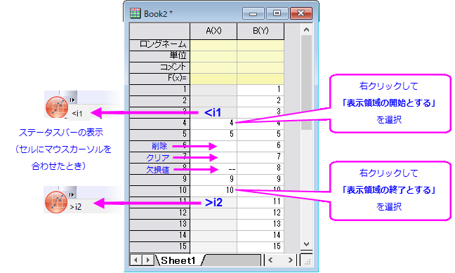
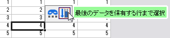

ワークシート内でのスクロールとデータ選択
Scroll-DataSel-in-Wks
プロットおよび分析操作は通常、アクティブワークシート内の選択されたデータに対して実行されます。
|
Note：OriginのXファンクションベースのダイアログボックスの多くには、アクティブになったときにOriginプロジェクト内のデータの「ハント」を許可する1つまたは複数のインタラクティブな範囲選択コントロールがあります。 このコントロールの使用方法は、入力データの指定の指定で説明されています。
|
未使用のワークシートセル、網掛けの背景、および欠損値
Origin 2019以降では、「未使用」のワークシートセルの背景は網掛けになっています。これは、プロットおよび分析操作でどの列データがカウントされているのかを明確にするために追加されました。次の図では、列A（X）に3つの未使用セルがあり、その後に7つの使用済みセルのシーケンスが続き、その後に別の未使用セルのシーケンスが続きます。
- 
特徴：
- 使用されているセルの（中央）シーケンスには、データを含むセル、空のセル、および欠損値の記号（--）.を示すセルが含まれています。
- 特定の列内で、最初に使用された（網掛けのない）インデックス番号のセルは "<i1"、つまり列内の最初に使用されたセルのインデックスよりも小さいと見なされます。さらに、最後に使用されたセルよりも大きいインデックス番号のセルは、 "> 2"、つまり列内の最後に使用されたセルのインデックスよりも大きいと見なされます。
- インデックス番号 "i1"と "i2"は、プロットと分析操作で考慮される列行範囲を定義するためにOriginが内部的に使用する2つの値です。操作に応じて、空のセルまたは欠損値を含むセルはカウントされる場合とカウントされない場合があるため、「考慮」と言います（空のセルと欠損値の処理方法を判断するには、個々のツールのドキュメントを参照してください）。ほとんどの場合、ユーザーは数量 "i1"と "i2"を気にする必要はありません。ワークシートセル背景の網掛けは、「未使用のセル」を視覚的に表示します。
- Origin 2019より前のバージョンでは、手動で列にデータを入力している間にセルをスキップした場合や、セルをクリックして編集またはショートカットメニューからクリアを選択した場合、ワークシートのセルに欠損値記号（--）が表示されました。Origin 2019以降、スキップされたセルはデフォルトで空のセルとして表示されます。2019年以前の動作に戻すには、LabTalkシステム変数@CDB = 0 を設定します（システム変数の値を変更する方法については、このFAQを参照してください）
セルの選択（連続または非連続選択）
- マウスで連続したワークシートセルのグループを選択するには、クリックアンドドラッグしてセルを選択します（下記の列または行の選択を参照）。
- 列内の最後のデータを含む行まで選択を拡張するには、ワークシートのミニツールバーボタンを使用することもできます。
- 
- 行（i）、列（j）で選択したセルからシートの左上のセルの範囲にあるすべてのセルを選択するには、Ctrl + Shift + Homeキーを押します。
- ワークシート内の連続していないセルを選択するには、Ctrlキーを押しながら複数の範囲を選択します。
- 空欄/欠損値のセルまでセルを選択するには、CTRL + SHIFTを押しながら矢印キーを押して選択します。操作を繰り返すと、空の値または欠損値があるセルと、次の値を含むセルが選択されます。あるいは、@ESL = 1に設定すると強制的に、空/欠損セル値を超えた選択が可能です。をステム変数の値を変更する手順については、この FAQを参照してください。
|
Note：CTRLキーを押して、ワークシートデータの単一列内で連続しない選択をすることができます。選択範囲ごとにグラフを作図できます。複数の不連続な選択をプロットすると、プロットグループが作成され、作図の詳細ダイアログにグループタブが追加されます。
|
列の選択（連続または非連続選択）
- ワークシート内の連続した列を選択するには、目的の範囲内の最初の列見出しをクリックして選択し、目的の範囲内の最後の列にポインタをドラッグします。 マウスボタンを離して列を選択します。または、目的の範囲内の最初の列見出しをクリックして選択し、必要に応じてワークシートの下部にあるスクロールバーを使用してワークシートをスクロールし、目的の範囲内の最後の列を表示します。Shiftキーを押しながらこの最後の列見出しをクリックします。
- 連続した列の代替選択: 列を選択し、Shiftキーを押しながら左または右矢印キーを使用して、隣接する列を選択します。
- ワークシート内の連続していない列を選択するには、最初の列見出しをクリックして選択し、Ctrlキーを押しながら追加の列見出しをクリックします。
行を選択する（連続または非連続選択）
- 隣接する行範囲を選択するには、目的の範囲内の最初の行見出しをクリックして選択し、目的の範囲内の最後の行までドラッグします。マウスボタンを離して行を選択します。または、目的の範囲内の最初の行見出しをクリックして選択し、目的の範囲内の最後の行を表示するようにワークシートをスクロールして、Shiftキーを押しながらこの最後の行見出しをクリックします。
- 連続した行の代替選択: 行を選択し、Shiftキーを押しながら上または下矢印キーを使用して、隣接する行を選択します。
- 連続していない行を選択するには、Ctrlキーを押しながらドラッグして選択します。
ワークシート全体を選択する
ワークシートのすべての列を選択するには、以下のいずれかを実行します。
- ワークシートの左上隅にある空白をポイントし、ポインタが下向きの矢印になったら、一度クリックしてワークシート内のすべての列（データセット）を選択します。
- クリックして最初のセル（左上）を選択し、CTRL + SHIFT + ENDを押すと、シート内の最後に入力されたセル（右下）まで選択範囲を広げます。
- 最初の列見出しをクリックして選択し、ワークシート内の残りのすべての列見出しの上にポインタをドラッグします。
- 最初の列見出しをクリックして選択し、最後の列が表示されるまでワークシートをスクロールし、最後の列見出しをクリックしながらShiftキーを押します。
指定した列番号または行番号までスクロールする
ワークシート内の特定の列または行を見つけるには
- 編集：行へジャンプを選択します。ワークシートウィンドウ内（またはワークシートグリッドの右側）に移動するか、右クリックしてショートカットメニューから行へジャンプを選択します。
- データ探索ダイアログで、列へ移動 / 行へ移動テキストボックスに列/行番号を入力し、OKをクリックします。列番号と行番号の両方を指定すると、交差するセルが見つかります。